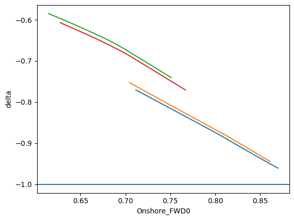
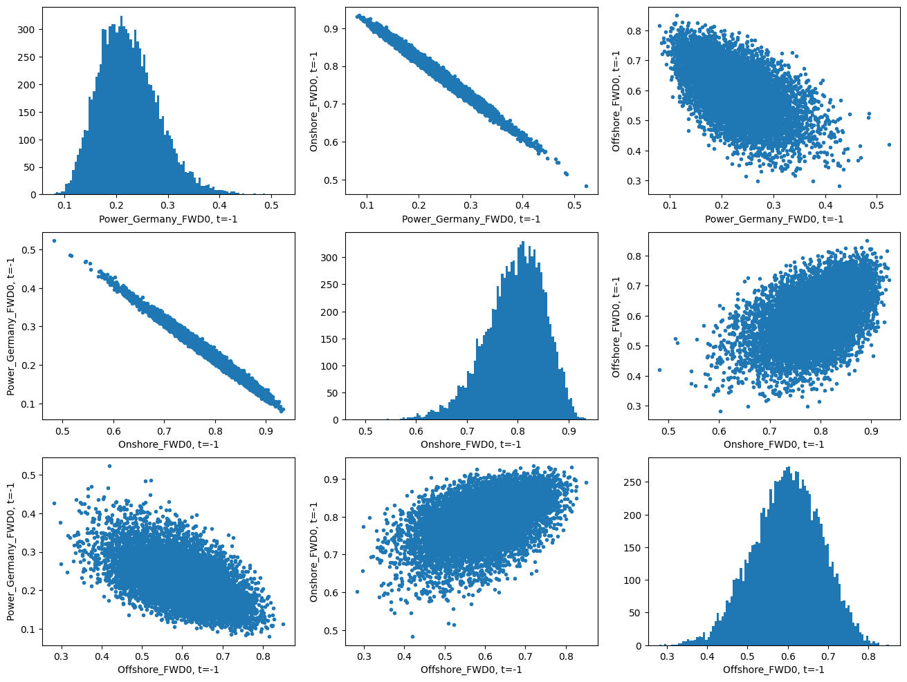
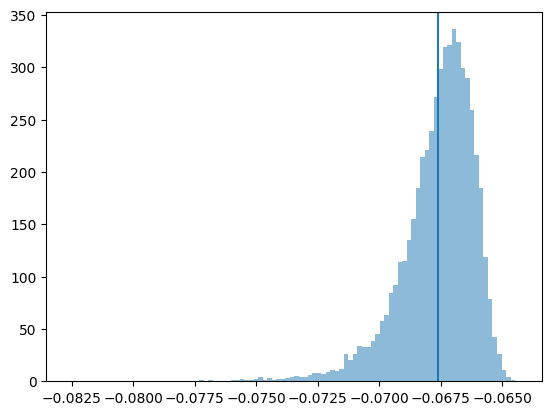

Deep Hedging of Green PPAs
[1]:
import datetime as dt
import sys
sys.path.insert(0,'../..')
from typing import List
import numpy as np
import matplotlib.pyplot as plt
import json
import os
os.environ["CUDA_VISIBLE_DEVICES"] = "-1"
from rivapy.tools.datetime_grid import DateTimeGrid
from rivapy.models.residual_demand_fwd_model import WindPowerForecastModel, MultiRegionWindForecastModel, ResidualDemandForwardModel, LinearDemandForwardModel
from rivapy.instruments.ppa_specification import GreenPPASpecification
from rivapy.models.residual_demand_model import SmoothstepSupplyCurve
from rivapy.models import OrnsteinUhlenbeck
from rivapy.pricing.green_ppa_pricing import GreenPPADeepHedgingPricer, DeepHedgeModel
import numpy as np
from scipy.special import comb
from IPython.display import display, HTML
display(HTML("<style>.container { width:80% !important; }</style>"))
%load_ext autoreload
%autoreload 2
%matplotlib inline
/home/doeltz/doeltz/development/RiVaPy/rivapy/__init__.py:11: UserWarning: The pyvacon module is not available. You may not use all functionality without this module. Consider installing pyvacon.
warnings.warn('The pyvacon module is not available. You may not use all functionality without this module. Consider installing pyvacon.')
2023-06-22 17:57:18.177259: W tensorflow/stream_executor/platform/default/dso_loader.cc:64] Could not load dynamic library 'libcudart.so.11.0'; dlerror: libcudart.so.11.0: cannot open shared object file: No such file or directory
2023-06-22 17:57:18.177279: I tensorflow/stream_executor/cuda/cudart_stub.cc:29] Ignore above cudart dlerror if you do not have a GPU set up on your machine.
Residual Demand Forward Model
[2]:
days = 10
timegrid = np.linspace(0.0, days*1.0/365.0, days*24)
forward_expiries = [timegrid[-1]]
[3]:
wind_onshore = WindPowerForecastModel(region='Onshore', speed_of_mean_reversion=0.1, volatility=4.80)
wind_offshore = WindPowerForecastModel(region='Offshore', speed_of_mean_reversion=0.5, volatility=4.80)
regions = [ MultiRegionWindForecastModel.Region(
wind_onshore,
capacity=1000.0,
rnd_weights=[0.8,0.2]
),
MultiRegionWindForecastModel.Region(
wind_offshore,
capacity=100.0,
rnd_weights=[0.2,0.8]
)
]
wind = MultiRegionWindForecastModel('Wind_Germany', regions)
model = LinearDemandForwardModel(wind_power_forecast=wind, x_volatility=1.4 , x_mean_reversion_speed=2.0,
power_name= 'Power_Germany')
[5]:
np.random.seed(42)
rnd = np.random.normal(size=model.rnd_shape(n_sims=10_000, n_timesteps=timegrid.shape[0]))
model_result = model.simulate(timegrid, rnd, expiries=forward_expiries,
initial_forecasts={'Onshore': [0.8],
'Offshore': [0.6]},
power_fwd_prices = [100])
[6]:
model_result.keys()
[6]:
{'Offshore_FWD0', 'Onshore_FWD0', 'Power_Germany_FWD0', 'Wind_Germany_FWD0'}
PPA Hedging
[7]:
class Repo:
def __init__(self, repo_dir):
self.repo_dir = repo_dir
self.results = {}
with open(repo_dir+'/hedge_results.json','r') as f:
self.results = json.load(f)
def run_hedge_experiment(self, val_date, ppa_spec, model, **kwargs):
params = {}
params['ppa_spec'] = ppa_spec.to_dict()
params['ppa_spec_hash'] = ppa_spec.hash()
params['model'] = model.to_dict()
params['model_hash'] = model.hash()
params['pricing_param'] = kwargs
hash_key = FactoryObject.hash_for_dict(params)
#if hash_key in results:
pricing_result = GreenPPADeepHedgingPricer.price(val_date,
ppa_spec,
model,
**kwargs)
return pricing_results
from rivapy.tools.interfaces import FactoryObject
def compute_pnl_figures(pricing_results):
pnl = pricing_results.hedge_model.compute_pnl(pricing_results.paths, pricing_results.payoff)
return {'mean': pnl.mean(), 'var': pnl.var(), '1%':np.percentile(pnl,1), '99%': np.percentile(pnl,1)}
def compute_pnl(pricing_results):
return pricing_results.hedge_model.compute_pnl(pricing_results.paths, pricing_results.payoff)
[8]:
val_date = dt.datetime(2023,1,1)
strike = 0.3 #0.22
spec = GreenPPASpecification(udl='Power_Germany',
technology = 'Wind',
location = 'Onshore',
schedule = [val_date + dt.timedelta(days=2)],
fixed_price=strike,
max_capacity = 1.0)
[9]:
pricing_result = GreenPPADeepHedgingPricer.price(val_date,
spec,
model,
model,
initial_forecasts={'Onshore': [0.8, 0.7,0.6,0.5],
'Offshore': [0.6,0.6,0.6,0.6]},
power_fwd_prices=[1.0],
forecast_hours=[10, 14, 18],
additional_states=['Offshore'],
depth=3, nb_neurons=32, n_sims=100_000,
regularization=0.0,
epochs=20, verbose=1,
tensorboard_logdir = 'logs/' + dt.datetime.now().strftime("%Y%m%dT%H%M%S"),
initial_lr=5e-4,
decay_steps=8_000,
batch_size=100, decay_rate=0.8, seed=42)
---------------------------------------------------------------------------
TypeError Traceback (most recent call last)
/tmp/ipykernel_437888/2057733429.py in <module>
----> 1 pricing_result = GreenPPADeepHedgingPricer.price(val_date,
2 spec,
3 model,
4 model,
5 initial_forecasts={'Onshore': [0.8, 0.7,0.6,0.5],
TypeError: price() got multiple values for argument 'initial_forecasts'
[11]:
model = DeepHedgeModel.load('depp')
WARNING:tensorflow:No training configuration found in save file, so the model was *not* compiled. Compile it manually.
WARNING:tensorflow:No training configuration found in save file, so the model was *not* compiled. Compile it manually.
[37]:
pricing_results = run_hedge_experiment(val_date,
spec,
model,
initial_forecasts={'Onshore': [0.8, 0.7,0.6,0.5],
'Offshore': [0.6,0.6,0.6,0.6]},
power_fwd_prices=[1.0],
forecast_hours=[10, 14, 18],
additional_states=['Offshore'],
depth=3, nb_neurons=32, n_sims=100_000,
regularization=0.0,
epochs=20, verbose=1,
tensorboard_logdir = 'logs/' + dt.datetime.now().strftime("%Y%m%dT%H%M%S"),
initial_lr=5e-4,
decay_steps=8_000,
batch_size=100, decay_rate=0.8, seed=42)
/home/doeltz/doeltz/development/RiVaPy/rivapy/tools/datetime_grid.py:24: FutureWarning: Argument `closed` is deprecated in favor of `inclusive`.
self.dates = pd.date_range(start, end, freq=freq, tz=tz, closed=closed).to_pydatetime()
Epoch 1/20
1000/1000 [==============================] - 7s 2ms/step - loss: 1.0018e-04
Epoch 2/20
1000/1000 [==============================] - 2s 2ms/step - loss: 7.8207e-05
Epoch 3/20
1000/1000 [==============================] - 2s 2ms/step - loss: 7.9591e-05
Epoch 4/20
1000/1000 [==============================] - 2s 2ms/step - loss: 7.8396e-05
Epoch 5/20
1000/1000 [==============================] - 2s 2ms/step - loss: 7.7541e-05
Epoch 6/20
1000/1000 [==============================] - 2s 2ms/step - loss: 7.6689e-05
Epoch 7/20
1000/1000 [==============================] - 2s 2ms/step - loss: 7.5947e-05
Epoch 8/20
1000/1000 [==============================] - 2s 2ms/step - loss: 7.6003e-05
Epoch 9/20
1000/1000 [==============================] - 2s 2ms/step - loss: 7.4701e-05
Epoch 10/20
1000/1000 [==============================] - 2s 2ms/step - loss: 7.4335e-05
Epoch 11/20
1000/1000 [==============================] - 2s 2ms/step - loss: 7.4303e-05
Epoch 12/20
1000/1000 [==============================] - 2s 2ms/step - loss: 7.3094e-05
Epoch 13/20
1000/1000 [==============================] - 2s 2ms/step - loss: 7.3400e-05
Epoch 14/20
1000/1000 [==============================] - 2s 2ms/step - loss: 7.3353e-05
Epoch 15/20
1000/1000 [==============================] - 2s 2ms/step - loss: 7.3494e-05A: 0s
Epoch 16/20
1000/1000 [==============================] - 2s 2ms/step - loss: 7.3430e-05
Epoch 17/20
1000/1000 [==============================] - 2s 2ms/step - loss: 7.2063e-05
Epoch 18/20
1000/1000 [==============================] - 2s 2ms/step - loss: 7.2050e-05
Epoch 19/20
1000/1000 [==============================] - 2s 2ms/step - loss: 7.2099e-05
Epoch 20/20
1000/1000 [==============================] - 2s 2ms/step - loss: 7.2132e-05
[39]:
pricing_results.paths.keys()
#ttm
[39]:
dict_keys(['Power_Germany_FWD0', 'Onshore_FWD0', 'Offshore_FWD0'])
[85]:
t = 48
p=10.0
projection = np.linspace(0.9,1.1, 250)
projected_key = 'Onshore_FWD0'
for selected in [2,5,100,400]:
#selected = 2
#key = 'Power_Germany_FWD0'
#x = np.percentile(pricing_results.paths[key][-1,:],p)
#selected = np.abs(x-pricing_results.paths[key][-1,:]).argmin()
paths = {}
T = pricing_results.hedge_model.timegrid[-1]
ttm = (T-pricing_results.hedge_model.timegrid[t])/T
for k,v in pricing_results.paths.items():
if k == projected_key:
paths[k] = projection*v[t,selected]
x = projection*v[t,selected]
else:
paths[k] = np.full(shape=(projection.shape[0]), fill_value=v[t,selected])
delta = pricing_results.hedge_model.compute_delta(paths, ttm)
plt.plot(x, delta)
plt.xlabel(projected_key)
plt.axhline(-1.0)
plt.ylabel('delta');
8/8 [==============================] - 0s 3ms/step
8/8 [==============================] - 0s 3ms/step
8/8 [==============================] - 0s 2ms/step
8/8 [==============================] - 0s 1ms/step

Path Plots
[67]:
t = -1
plt.figure(figsize=(16,12))
n_x = 3
n_y = 3
i=1
for k,v in pricing_results.paths.items():
for l,w in pricing_results.paths.items():
plt.subplot(n_x,n_y,i)
if k==l:
plt.hist(v[t,:], bins=100)
plt.xlabel(k+', t='+str(t))
else:
plt.plot(v[t,:], w[t,:], '.')
plt.xlabel(k+', t='+str(t))
plt.ylabel(l+', t='+str(t))
i += 1

Hedge PnL Distribution
[12]:
pnl = pricing_results.hedge_model.compute_pnl(pricing_results.paths, pricing_results.payoff)
#plt.hist(pricing_results.payoff, bins=100, alpha=0.5, density=True)
plt.axvline(pnl.mean())
plt.hist(pnl,bins=100, alpha=0.5, density=True);
313/313 [==============================] - 8s 4ms/step

Delta Plots
[64]:
t = 0
n_x = 2
n_y = 3
plt.figure(figsize=(24,8))
delta = pricing_results.hedge_model.compute_delta(pricing_results.paths, t)
i=1
for k,v in pricing_results.paths.items():
plt.subplot(n_x, n_y, i)
plt.plot(v[t,:], delta,'.')
plt.xlabel(k+', t='+str(t))
plt.ylabel('delta')
i+= 1
for k,v in pricing_results.paths.items():
plt.subplot(n_x, n_y, i)
plt.plot(v[t,:], v[-1,:],'.')
plt.xlabel(k+', t='+str(t))
plt.ylabel(k+', final')
i+= 1
313/313 [==============================] - 1s 2ms/step

[ ]: